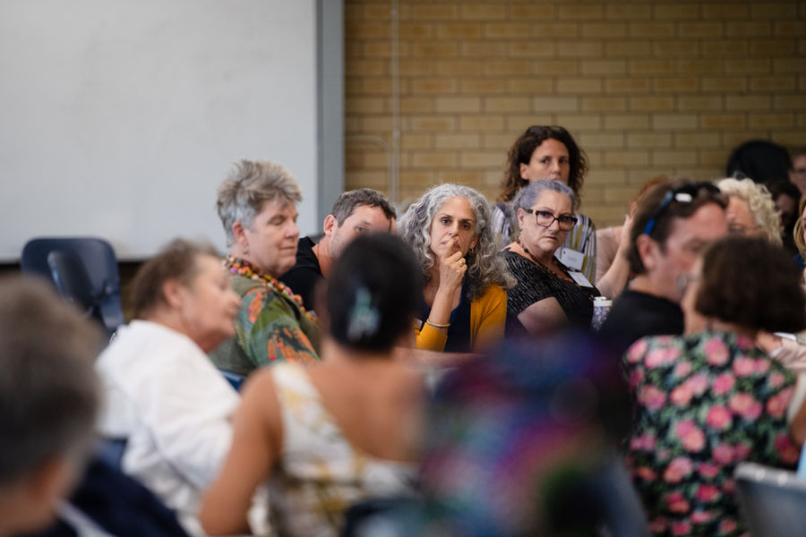
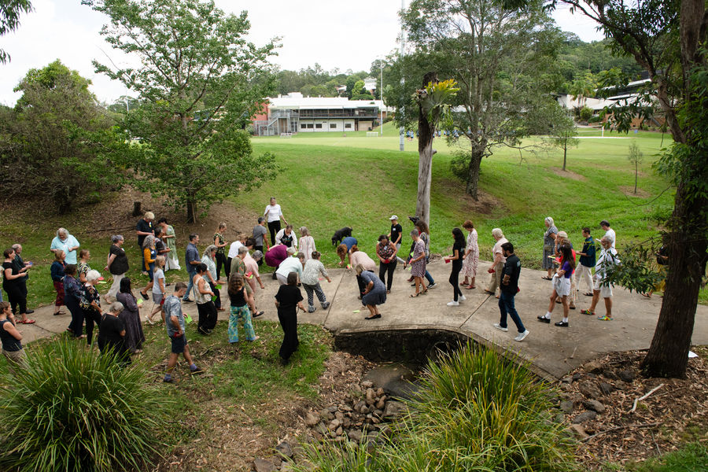

Neighbours looking after neighbours, across the Northern Rivers
A growing movement of grassroots community groups building disaster resilience across the Northern Rivers.
Who we are
The group made up of groups.
Since early 2024, more than 60 groups and organisations across the Northern Rivers have joined together to form the Resilience Alliance, a community-led network focused on collective care, preparedness and regional strength.


What we have achieved
- 60+
- grassroots groups and organisations
- 7
- local government areas
- 3
- projects under way
- $800,000
- HELP Fund grants program, over two years
Thanks to our partners
In their own words

“It's cutting edge. I don't really know whether this sort of thing has been tried before, certainly for community disaster response groups.”
Alliance participant

Story to come
A member group's story, supplied by NRCRA.

Story to come
A member group's story, supplied by NRCRA.

Story to come
A member group's story, supplied by NRCRA.

Where we are
Alliance groups work in the towns the 2022 floods hit hardest. Tap a town to find it on the map.
Tweed
Byron
Ballina
Lismore
Richmond Valley
Kyogle
Clarence Valley
Towns named in 2022 flood reports by AIDR, Lismore City Council and Risk Frontiers. NRCRA's member list will add every place where Alliance groups work.
How you can be part of it
Join the network
Bring your group into the Alliance.
Find out howCome to a gathering
27 Nov: Alliance Gathering, Phase 1.
UpcomingShare knowledge
Add what works to the R.A.C.K.
The R.A.C.KPartner with us
Fund or research community-led resilience.
Our partners

Local experience. Shared learning. Wider impact.
Since early 2024, more than 60 groups and organisations across the Northern Rivers have joined together to form the Resilience Alliance, a community-led network focused on collective care, preparedness and regional strength.
Our vision
Connected, collaborative Northern Rivers communities that are empowered to care for themselves and each other before, during and after disasters.
Purpose
To develop a self-sustaining, trusted Alliance of place-based, community-led resilience groups and organisations. The Alliance shares knowledge and resources, provides mutual support and wellbeing, takes collective action and advocates for identified community needs.
Our values
Connect
We connect 60+ community resilience groups across the region so local leaders can find each other, share resources and act together.
Share
We share knowledge, training and practical tools across the network so every community benefits from what others have learned.
Care
We care for the people doing this work: reducing the load on volunteers, removing duplication and supporting community-led resilience.
What we are changing
From
- Dependence
- Fragmented organisations
- Competition for funding
- Isolated communities
To
- Cooperation
- Shared knowledge
- Local leadership
- Connected communities
Our journey
- 2022
After the floods and landslides, groups across the Northern Rivers organised locally and connections began to grow. Research found that grassroots groups wanted peer-to-peer support.
- 2024
The Resilience Alliance took shape, with the University Centre for Rural Health (UCRH) as embedded researchers documenting progress along the way.
- 2025
UCRH completed the first Resilience Alliance Health Check and shared findings with groups in the network.
 2026
2026Connected and Prepared brings a Monitoring, Evaluation and Learning Framework and Implementation Plan.
 2027 to 2028
2027 to 2028Research and MEAL continue alongside the Alliance as it supports and resources groups in the network.
How we learn
Monitoring, Evaluation, Accountability and Learning, with researchers from the University Centre for Rural Health.
- Connect
- Listen
- Reflect
- Improve
- Share
- Strengthen
“It's cutting edge. I don't really know whether this sort of thing has been tried before, certainly for community disaster response groups.”
Alliance participant
Our people
- PhotoName
Network Lead - PhotoName
Steering committee - PhotoName
Steering committee - PhotoName
UCRH researcher - PhotoName
UCRH researcher
Names, roles and photos to be supplied.
Common questions
How is the Alliance different from Community Resilience Networks?
Community Resilience Networks are hosted by councils in each local government area. The Alliance is a region-wide network that sits outside formal structures, a flexible space for independent grassroots groups to share practical solutions and build capacity.
How is the Alliance different from Plan C?
Plan C trains people directly and is one of our valued member organisations. The Alliance is a network of networks: it connects groups, helps them share what they know and gives them a stronger collective voice.

Thank you to our partners
The funders, delivery partners and researchers behind community-led resilience.
Placeholder partners. These logos are borrowed from another site to show the layout. They are not NRCRA partners. Real partners to be shown here: Disaster Ready Fund, FRRR, NRMA Insurance HELP Fund, NSW Government, Northern Rivers Community Foundation, Resilient Lismore, Plan C, University Centre for Rural Health, Monash University.
Funders
Whose funding makes this work possible.
Delivery partners
Who we build and deliver programs with.
Research partners
Who listens, reflects and tracks change alongside us.
Projects they support
Connected and Prepared
Governance, capacity building and shared digital tools.
Resourcing Community Resilience
Participatory grantmaking, decided by locals.
Learning Together (MEAL)
Monitoring, Evaluation and Learning with embedded researchers.
Partner with us
Talk to the Network Lead about funding, research or delivery partnerships.
Groups across the Northern Rivers
60+ grassroots, place-based groups working across five pillars.
Placeholder map of the region. In the build this is the Alliance's own Google Map, with a pin for each member group.
Places we connect
Alliance groups work in the towns the 2022 floods hit hardest. Tap a town to find it on the map.
Tweed
Byron
Ballina
Lismore
Richmond Valley
Kyogle
Clarence Valley
Towns named in 2022 flood reports by AIDR, Lismore City Council and Risk Frontiers. NRCRA's member list will add every place where Alliance groups work.
Five pillars
Grow the Alliance
Welcoming more place-based groups so no group works alone.
Training and resource sharing
Practical tools, templates and learning passed group to group.
Peer support and self care
Looking after the people who look after their communities.
Funding and collective projects
Participatory grants and shared projects, decided locally.
Advocacy
A stronger collective voice in funding, policy and planning.
All groups
| Group | Location | Pillar |
|---|---|---|
| Sample group A | Lismore | Peer support and self care |
| Sample group B | Byron | Training and resource sharing |
| Sample group C | Tweed | Funding and collective projects |
| Sample group D | Ballina | Grow the Alliance |
| Sample group E | Kyogle | Advocacy |
| Sample group F | Richmond Valley | Peer support and self care |
No groups match those filters.

The R.A.C.K
Resilience Alliance Community Knowledge. One shared place where the whole network can find what already works.
What's inside
The 5 RACKs
- 13 resources
Get Ready
Plans and checklists for before a disaster.
- 25 resources
Emergency
What to do and who to call when it happens.
- 314 resources
Volunteers
Registering, inducting and looking after volunteers.
- 412 resources
Run Your Group
Governance, templates and running a healthy group.
- 56 resources
Training & Workshops
Workshops and learning for group leaders.
Counts from the R.A.C.K, October 2026.
Funding and grants
The HELP Fund
Participatory grants for local groups.
Establishment grants
$3,000
Resilience action grants
Up to $10,000
Access is for Alliance groups. Need help getting in?
Prototype mock. This stands in for the real R.A.C.K until the live links are supplied. Nothing is sent or stored.
Prototype mock. This stands in for the real R.A.C.K until the live links are supplied. Nothing is sent or stored.
Request access to the R.A.C.K
Access is for Alliance groups. The Network Lead approves new requests.
Already have access? Sign in
Prototype mock. This stands in for the real R.A.C.K until the live links are supplied. Nothing is sent or stored.
Full RACK 40MY RACK 0Ask RACK LIVE
One shared place where the whole network can find what already works.
Years of real community experience across the Northern Rivers. Find templates and guides you can use straight away, and contribute knowledge back in two minutes.
For life-threatening emergencies, call Triple Zero (000) immediately.
Resource categories
| Name | Category | Updated |
|---|---|---|
| Community Emergency Hub Guide | Get Ready | Dec 2025 |
| Volunteer registration form | Volunteers | Sample |
| Inducting volunteers who turn up on the day | Volunteers | Sample |
| Mullumbimby evacuation map | Emergency | Sample |
| Resilience Address Book | Run Your Group | Jan 2026 |
| One Calendar (regional shared calendar) | Run Your Group | Jan 2026 |
| Connecting for Impact, UCRH report | Training & Workshops | Dec 2025 |
| Group governance template | Run Your Group | Sample |